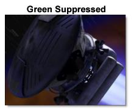

zMatte
Using proprietary matte extraction techniques, zMatte quickly and simply creates mattes with minimal parameters even if you are dealing with fine hair detail, smoke, or reflections.
Blue/Green Screen Keying
Of course, you can use zMatte to create just a single matte for blue/green screen footage, but we like to use an inner / outer keying method that involves creating a Primary Matte which has gray values in the foreground’s edge. This will give a nice, smooth edge in the final composite. Next, the trick is to use the Secondary Matte to fill in any gray areas of the Primary Matte while retaining the gray values in the edge. You can do this by adjusting the Blur, Shrink/Grow and/or Wrap parameters of the Secondary Matte to retain the Primary Matte’s edge values.
1 Load some green or blue screen source footage and create a session.
2 In the Trees window, add a zMatte node from the Nodes > Key tab and connect it to the source node.
3 Single-click in the center of the zMatte node to view and edit it.
4 Start by selecting Primary Matte from the View pop-up menu.
5 Set the Primary Matte > Extract On to Blue or Green Screen.
6 Adjust the Background so that the background areas are completely black.
7 Set the Foreground so that the Primary Matte has gray values, especially in the edges.
This Primary Matte will be used for the edges.
Note: If you are not going to use the Inner / Outer Keying method, you would adjust the Foreground so that the foreground values would be completely white in the Primary Matte. In this case, a Secondary Matte would not be used.
8 From the View menu, select Secondary Matte.
The screen is black, because you must first enable it.
9 Expand the Secondary Matte group and click on the Enable checkbox.
You can now see the Secondary Matte in the Viewer.
10 Set the Secondary Matte > Extract On to the same setting as the Primary Matte.
11 Adjust the Secondary Matte so that the foreground is completely white and the background is completely black.
12 Switch the View menu to Combined Matte.
The Combined Matte view shows the combination of the two mattes.
13 Adjust the Secondary Matte > Wrap parameter to pull back the hard edges of the Secondary Matte to reveal the gray edges of the Primary Matte.
Note: You could also use Secondary Matte > Shrink/Grow and Blur instead of or in conjunction with Wrap to blend the two mattes together.
14 Change the View pop-up menu to Composite.
If you have not input a background, the foreground will be composited over black.
15 If you have a clip that you would like to use for the background instead of black, connect it to the Background input of zMatte.
The foreground will then be composited over the background.
If you see any color spill from the blue or green screen, it can be eliminated using the Color Suppression controls.
16 Expand the Color Suppression group and click the Enable check box.
17 Adjust the Color Suppression > Foreground and Range controls as needed.
Generating Mattes Without A Blue/Green Screen
If your footage does not use a blue or green screen background, you have a number of matte extraction methods to choose from such as: Luminance, Hue, Saturation, Average, Red, Green, Blue, Cyan, Magenta and Yellow.
1 Change the Primary Matte > Extract On parameter to create a matte based on a whatever image values you choose. Extract On determines the image values that will be used to generate the matte.
You may have noticed that the Foreground and Background numeric fields gray out when not using the Blue or Green Screen extraction methods. Position and Range controls are used instead.
2 Change the Primary Matte > Position parameter if you want to select different values to be used for the matte.
The Position control selects the image values to be used in the matte based on the Extract On setting. If the matte is created using Luminance, a high Position value shows the brightest image values as white values in the matte. A low Position value shows the darkest image values as white values in the matte.
3 Increase the Primary Matte > Range control to add more values to the matte. Decrease for less values.
Range increases or decreases the range of values in the matte. A low Range value indicates a narrow range of values. A high Range value indicates a large range of values included in the matte.
4 The rest of the Primary Matte matte controls can be used the same as when using the Blue or Green Screen extraction methods.
Holdout Matte/Garbage Matte
A Holdout Matte defines foreground areas that should not be keyed out, while a Garbage Matte defines background areas that should be keyed out. zMatte has Holdout Matte and Garbage Matte auxiliary inputs that can come from a source image or a node like Roto.
1 If there are foreground areas that are not keying properly, hook a Roto node into the Holdout Matte input. Roto the appropriate foreground areas and they will be added to the output matte.
2 If there are background areas that are not keying properly, hook a Roto node into the Garbage Matte input. Roto the appropriate background areas and they will be subtracted from the output matte.
Using Light Wrap
Light Wrap helps blend the foreground into the background by making the color of the background wrap into the foreground edges without completely losing the edge.
1 Adjust the Light Wrap > Brightness setting to the appropriate brightness.
2 Change the View to Light Wrap.
3 Using the Light Wrap > Wrap control, set the thickness of the Light Wrap.
4 Switch the View back to Composite.
zMatte Output Options
zMatte can output either the output (foreground plus generated matte) or a composite.
1 If you plan to do further work on the RGBA channels downstream from zMatte, use zMatte’s Output. It will output the foreground plus the generated matte.
2 Use zMatte’s optional Composite output if you want zMatte to do the composite.
Go to the
zMatte node for more information.